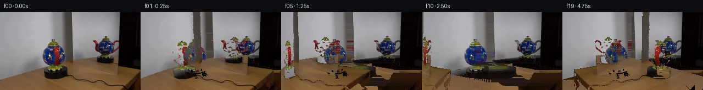

![首帧]()

Round 00
2026-11-06T02:04:22.650418+00:00像素候选变化代码 +388/−0inspection 更新
pixels 60791cf2457e6057 · code fee3d437fd4f2696
查看本轮 generate.py 真实 diff
--- previous/generate.py +++ current/generate.py @@ -0,0 +1,388 @@ +"""generate.py — PixelWorld-Text: Teapot rotation on platform with mirror reflection. + +Approach: + 1. Segment the scene into background, teapot, mirror, and platform regions. + 2. Simulate teapot rotation using a cylindrical-projection horizontal warp. + 3. Update the mirror reflection as a mirrored rendering of the rotated teapot. + 4. Fill revealed background areas via gradient-matched sampling. + 5. Save 20 frames (0-19), pixel tensor, inspection sheet, transition check, + and standalone HTML player. +""" + +import numpy as np +from PIL import Image, ImageDraw +from pathlib import Path +import base64, json + +# ── helpers ────────────────────────────────────────────────────────────── + +def rgb2hex(r, g, b): + return (int(r) << 16) | (int(g) << 8) | int(b) + + +def hex2rgb(v): + return ((v >> 16) & 0xFF, (v >> 8) & 0xFF, v & 0xFF) + + +def cylindrical_displacement_field(h, w, cx, radius, theta): + """Compute horizontal displacement for cylindrical rotation by theta radians. + + For a cylinder of given radius centred at cx, each pixel's angular + coordinate is arcsin((x-cx)/radius). Rotating by -theta (clockwise) + shifts the apparent surface. + """ + xs = np.arange(w, dtype=np.float64) + dx = xs - cx + # Clamp to valid cylinder surface + valid = np.abs(dx) < radius + phi = np.zeros(w, dtype=np.float64) + phi[valid] = np.arcsin(dx[valid] / radius) + phi_new = phi - theta + xs_new = cx + radius * np.sin(phi_new) + disp = xs_new - xs + disp[~valid] = 0.0 + return disp # shape (w,), broadcast per row + + +# ── load frame 0 ───────────────────────────────────────────────────────── + +CASE_DIR = Path(__file__).parent +img0 = Image.open(CASE_DIR / "first_frame.png") +arr0 = np.array(img0).astype(np.float64) # (144, 256, 3) +H, W = 144, 256 + +# ── scene segmentation ─────────────────────────────────────────────────── + +# Background wall mask (neutral gray, roughly uniform) +bg_mask = np.zeros((H, W), dtype=bool) +for y in range(H): + for x in range(W): + r, g, b = arr0[y, x] + if abs(r - g) < 25 and abs(r - b) < 25 and r > 90: + bg_mask[y, x] = True + +# Mirror region (blue-tinted, x≈76-130, y≈50-100) +mirror_mask = np.zeros((H, W), dtype=bool) +for y in range(H): + for x in range(W): + r, g, b = arr0[y, x] + if b > r + 10 and b > g + 5 and 70 < x < 135 and 45 < y < 105: + mirror_mask[y, x] = True + +# Teapot region (warm brass/copper, R > G, R > B+) +teapot_mask = np.zeros((H, W), dtype=bool) +for y in range(H): + for x in range(W): + r, g, b = arr0[y, x] + if r > 75 and r > b + 12 and r > g: + if not bg_mask[y, x] and not mirror_mask[y, x]: + teapot_mask[y, x] = True + +# Also include darker teapot body pixels +teapot_body = np.zeros((H, W), dtype=bool) +for y in range(H): + for x in range(W): + r, g, b = arr0[y, x] + if r > 45 and g > 25 and r > b + 8 and r > g + 3 and r < 115: + if not bg_mask[y, x] and not mirror_mask[y, x]: … diff truncated; 301 more lines …